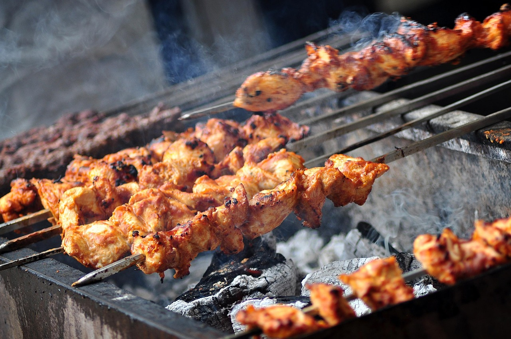

Charbroiled-salmon
Home

Tasty, juicy, and tender Turkish chicken kebabs start with a flavorful, Greek yogurt-based marinade. With this recipe, "Even inexperienced grillers can produce impressive results," says Chef John. "I'm not sure how 'Turkish' this is--it's loosely based on a lamb marinade I've used for a long time."
Ingredients
- 1 cup whole-milk Greek yogurt
- 6 cloves garlic, minced
- 2 tablespooms olive oil
- 2 tablespoons freshly sequeezed lemon juice, or more to taste
- 2 tablespoons ketchup/li>
- 1 tablespoon Aleppo red pepper flakes
- 1 tablespoon kosher salt
- 1½ tablespoon ground cumin
- 1 teaspoon freshly ground black pepper
- 1 teaspoon paprika
- ⅛ teaspoon ground cinnamon
- 2½ pounds boneless, skinless chicken thighs, halved
- long metal skewers
Directions
- Step 1
- Whisk yogurt, garlic, olive oil, lemon juice, ketchup, red pepper flakes, salt, cumin, black pepper, paprika, and cinnamon together in a large bowl.
- Step 2
- Place chicken thigh halves into the yogurt marinade and coat them thoroughly on all sides. Cover the bowl with plastic wrap and refrigerate, 2 to 8 hours.
- Step 3
- Preheat an outdoor grill for medium-high heat and lightly oil the grate.
- Step 4
- Using 2 skewers for each kebab, thread half of the chicken thighs onto each pair of skewers making a fairly thick "log" shape.
- Step 5
- Place kebabs on the preheated grill. Do not try to turn them until they begin to unstick from the grill, 3 or 4 minutes. Turn kebabs and grill the other side for 3 to 4 minutes. Continue cooking and turning until chicken is no longer pink in the center, about 6 minutes more. An instant-read thermometer inserted into the center should read at least 165 degrees F (74 degrees C).